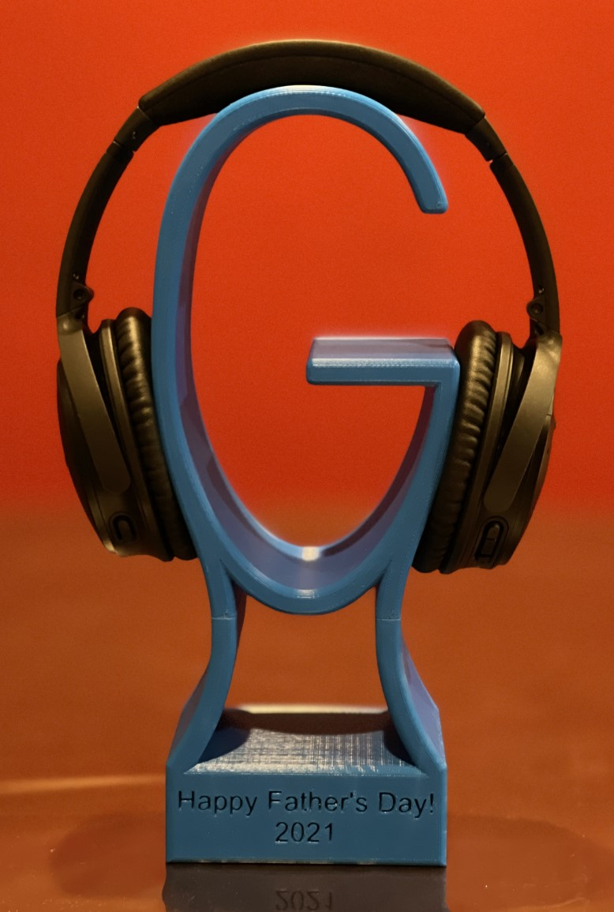

Headphone Stand
- Medium
- 3D print PVA filament
Tired of seeing my dad’s headphones placed on a new surface in the house every day, I designed a solution for him. I modeled a headphone stand in the shape of his initial for Father’s Day on Autodesk Fusion 360. I ensured the ear cups fit on the geometry and the heights matched before 3D printing the model in his favorite color.
